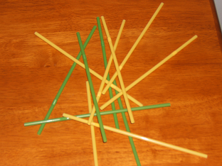

 Dwight has recently quit his job at the office. Unfortunately, he left many important files password protected. The rest of the office staff decide to draw straws to see who gets stuck with the boring task of cracking Dwight's codes.
Pam gets a stack of n straws and cuts n-1 of them short. Right about the time she finishes, Kevin
and Angela get in a heated discussion over an accounting error. In her fury, Angela knocks over the box of straws and they scatter
all over the straws that Pam just cut!
Pam starts to sort out the short straws from the rest when Michael, the office manager, stops by and tells her that she doesn't have
time to do that. So, instead of drawing straws the conventional way, the office staff try a new method. Toby, who is not a direct
employee of Michael's, grabs the bundle of straws and stands in the centre of the room. Michael's n employees stand in a
circle around Toby.
Toby arbitrarily chooses an employee to go first. This employee draws a single straw from Toby's hand. If this straw is short, then they
are excused from the circle. If this straw is long, then they must stay in the circle. In either case, the straw is
discarded and play proceeds to the next person
on the left. This continues, in a circular fashion, until all n-1 short straws have been drawn and there is a single
employee left. This employee is given the unfortunate task of cracking Dwight's codes. We assume that when a straw is drawn it is
chosen uniformly at random from the remaining straws and this choice is made independent of other choices.
One employee, named Jim, realizes that there are k employees who draw straws before he draws his first. Jim also
knows how many long straws are in the bundle in Toby's hand. While Jim is in the hands of fate, he wants to know the probability
of him being the only one who doesn't draw a short straw.
The first line of the input indicates the number of test cases to follow. For each test case, three integers n, m, and
k are specified with 0 < n ≤ 100, 0 ≤ m ≤ 100,
and 0 ≤ k < n.
For each test case, output the probability that Jim ends up as the last employee in the circle given that there are n employees,
m long straws, and k employees draw their first straw before Jim.
The probability should be output as a percentage rounded to three decimal places. The input is chosen so that a reasonable implementation
of a good algorithm will not suffer from precision errors.
2 2 1 1 2 2 0
50.000 33.333